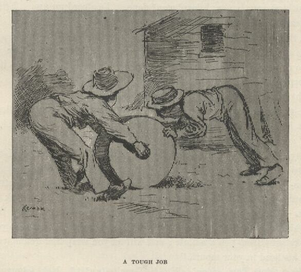
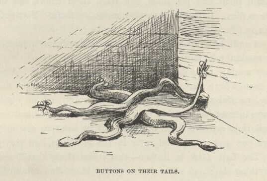
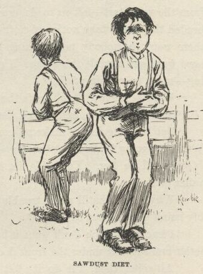
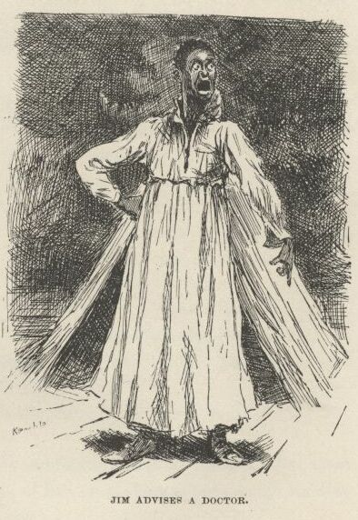

Adventures of Huckleberry Finn
CHAPTER XXXVIII.
MAKING them pens was a distressid tough job, and so was the saw; and Jim allowed the
inscription was going to be the toughest of all. That's the one which the prisoner
has to scrabble on the wall. But he had to have it; Tom said he'd got to; there warn't no case of a state prisoner not scrabbling his inscription to leave
behind, and his coat of arms.
"Look at Lady Jane Grey," he says; "look at Gilford Dudley; look at old Northumberland!
Why, Huck, s'pose it is considerble trouble?—what you going to do?—how you going to get around it? Jim's
got to do his inscription and coat of arms. They all do."
Jim says:
"Why, Mars Tom, I hain't got no coat o' arm; I hain't got nuffn but dish yer ole shirt,
en you knows I got to keep de journal on dat."
"Oh, you don't understand, Jim; a coat of arms is very different."
"Well," I says, "Jim's right, anyway, when he says he ain't got no coat of arms, because
he hain't."
"I reckon I knowed that," Tom says, "but you bet he'll have one before he goes out
of this—because he's going out right, and there ain't going to be no flaws in his record."
So whilst me and Jim filed away at the pens on a brickbat apiece, Jim a-making his'n
out of the brass and I making mine out of the spoon, Tom set to work to think out
the coat of arms. By and by he said he'd struck so many good ones he didn't hardly
know which to take, but there was one which he reckoned he'd decide on. He says:
"On the scutcheon we'll have a bend or in the dexter base, a saltire murrey in the fess, with a dog, couchant, for common charge, and under his foot a chain
embattled, for slavery, with a chevron vert in a chief engrailed, and three invected lines on a field azure, with the nombril points rampant on a dancette indented; crest, a runaway nigger,
sable, with his bundle over his shoulder on a bar sinister; and a couple of gules for supporters,
which is you and me; motto, Maggiore Fretta, Minore Otto. Got it out of a book—means the more haste the less speed."
"Geewhillikins," I says, "but what does the rest of it mean?"
"We ain't got no time to bother over that," he says; "we got to dig in like all git-out."
"Well, anyway," I says, "what's some of it? What's a fess?"
"A fess—a fess is—you don't need to know what a fess is. I'll show him how to make it when he gets to
it."
"Shucks, Tom," I says, "I think you might tell a person. What's a bar sinister?"
"Oh, I don't know. But he's got to have it. All the nobility does."
That was just his way. If it didn't suit him to explain a thing to you, he wouldn't
do it. You might pump at him a week, it wouldn't make no difference.
He'd got all that coat of arms business fixed, so now he started in to finish up the
rest of that part of the work, which was to plan out a mournful inscription—said Jim
got to have one, like they all done. He made up a lot, and wrote them out on a paper,
and read them off, so:
1. Here a captive heart busted. 2. Here a poor prisoner, forsook by the world and
friends, fretted his sorrowful life. 3. Here a lonely heart broke, and a worn spirit
went to its rest, after thirty-seven years of solitary captivity. 4. Here, homeless
and friendless, after thirty-seven years of bitter captivity, perished a noble stranger,
natural son of Louis XIV.
Tom's voice trembled whilst he was reading them, and he most broke down. When he got
done he couldn't no way make up his mind which one for Jim to scrabble on to the wall,
they was all so good; but at last he allowed he would let him scrabble them all on.
Jim said it would take him a year to scrabble such a lot of truck on to the logs
with a nail, and he didn't know how to make letters, besides; but Tom said he would
block them out for him, and then he wouldn't have nothing to do but just follow the
lines. Then pretty soon he says:
"Come to think, the logs ain't a-going to do; they don't have log walls in a dungeon:
we got to dig the inscriptions into a rock. We'll fetch a rock."
Jim said the rock was worse than the logs; he said it would take him such a pison
long time to dig them into a rock he wouldn't ever get out. But Tom said he would
let me help him do it. Then he took a look to see how me and Jim was getting along
with the pens. It was most pesky tedious hard work and slow, and didn't give my hands
no show to get well of the sores, and we didn't seem to make no headway, hardly; so
Tom says:
"I know how to fix it. We got to have a rock for the coat of arms and mournful inscriptions,
and we can kill two birds with that same rock. There's a gaudy big grindstone down
at the mill, and we'll smouch it, and carve the things on it, and file out the pens
and the saw on it, too."

It warn't no slouch of an idea; and it warn't no slouch of a grindstone nuther; but
we allowed we'd tackle it. It warn't quite midnight yet, so we cleared out for the
mill, leaving Jim at work. We smouched the grindstone, and set out to roll her home,
but it was a most nation tough job. Sometimes, do what we could, we couldn't keep
her from falling over, and she come mighty near mashing us every time. Tom said she
was going to get one of us, sure, before we got through. We got her half way; and
then we was plumb played out, and most drownded with sweat. We see it warn't no use;
we got to go and fetch Jim. So he raised up his bed and slid the chain off of the
bed-leg, and wrapt it round and round his neck, and we crawled out through our hole
and down there, and Jim and me laid into that grindstone and walked her along like
nothing; and Tom superintended. He could out-superintend any boy I ever see. He
knowed how to do everything.
Our hole was pretty big, but it warn't big enough to get the grindstone through; but
Jim he took the pick and soon made it big enough. Then Tom marked out them things
on it with the nail, and set Jim to work on them, with the nail for a chisel and an
iron bolt from the rubbage in the lean-to for a hammer, and told him to work till
the rest of his candle quit on him, and then he could go to bed, and hide the grindstone
under his straw tick and sleep on it. Then we helped him fix his chain back on the
bed-leg, and was ready for bed ourselves. But Tom thought of something, and says:
"You got any spiders in here, Jim?"
"No, sah, thanks to goodness I hain't, Mars Tom."
"All right, we'll get you some."
"But bless you, honey, I doan' want none. I's afeard un um. I jis' 's soon have rattlesnakes aroun'."
Tom thought a minute or two, and says:
"It's a good idea. And I reckon it's been done. It must a been done; it stands to reason. Yes, it's a prime good idea. Where could you
keep it?"
"Keep what, Mars Tom?"
"Why, a rattlesnake."
"De goodness gracious alive, Mars Tom! Why, if dey was a rattlesnake to come in heah
I'd take en bust right out thoo dat log wall, I would, wid my head."
"Why, Jim, you wouldn't be afraid of it after a little. You could tame it."
"Tame it!"
"Yes—easy enough. Every animal is grateful for kindness and petting, and they wouldn't
think of hurting a person that pets them. Any book will tell you that. You try—that's
all I ask; just try for two or three days. Why, you can get him so, in a little while,
that he'll love you; and sleep with you; and won't stay away from you a minute; and
will let you wrap him round your neck and put his head in your mouth."
"Please, Mars Tom—doan' talk so! I can't stan' it! He'd let me shove his head in my mouf—fer a favor, hain't it? I lay he'd wait a pow'ful long
time 'fo' I ast him. En mo' en dat, I doan' want him to sleep wid me."
"Jim, don't act so foolish. A prisoner's got to have some kind of a dumb pet, and if a rattlesnake hain't ever been tried, why,
there's more glory to be gained in your being the first to ever try it than any other
way you could ever think of to save your life."
"Why, Mars Tom, I doan' want no sich glory. Snake take 'n bite Jim's chin off, den whah is de glory? No, sah, I doan' want no sich doin's."
"Blame it, can't you try? I only want you to try—you needn't keep it up if it don't work."
"But de trouble all done ef de snake bite me while I's a tryin' him. Mars Tom, I's willin' to tackle mos'
anything 'at ain't onreasonable, but ef you en Huck fetches a rattlesnake in heah
for me to tame, I's gwyne to leave, dat's shore."
"Well, then, let it go, let it go, if you're so bull-headed about it. We can get
you some garter-snakes, and you can tie some buttons on their tails, and let on they're
rattlesnakes, and I reckon that 'll have to do."

"I k'n stan' dem, Mars Tom, but blame' 'f I couldn' get along widout um, I tell you dat. I never
knowed b'fo' 't was so much bother and trouble to be a prisoner."
"Well, it always is when it's done right. You got any rats around here?"
"No, sah, I hain't seed none."
"Well, we'll get you some rats."
"Why, Mars Tom, I doan' want no rats. Dey's de dadblamedest creturs to 'sturb a body, en rustle roun' over 'im,
en bite his feet, when he's tryin' to sleep, I ever see. No, sah, gimme g'yarter-snakes,
'f I's got to have 'm, but doan' gimme no rats; I hain' got no use f'r um, skasely."
"But, Jim, you got to have 'em—they all do. So don't make no more fuss about it. Prisoners ain't ever
without rats. There ain't no instance of it. And they train them, and pet them,
and learn them tricks, and they get to be as sociable as flies. But you got to play
music to them. You got anything to play music on?"
"I ain' got nuffn but a coase comb en a piece o' paper, en a juice-harp; but I reck'n
dey wouldn' take no stock in a juice-harp."
"Yes they would they don't care what kind of music 'tis. A jews-harp's plenty good enough for a rat.
All animals like music—in a prison they dote on it. Specially, painful music; and
you can't get no other kind out of a jews-harp. It always interests them; they come
out to see what's the matter with you. Yes, you're all right; you're fixed very well.
You want to set on your bed nights before you go to sleep, and early in the mornings,
and play your jews-harp; play 'The Last Link is Broken'—that's the thing that 'll
scoop a rat quicker 'n anything else; and when you've played about two minutes you'll
see all the rats, and the snakes, and spiders, and things begin to feel worried about
you, and come. And they'll just fairly swarm over you, and have a noble good time."
"Yes, dey will, I reck'n, Mars Tom, but what kine er time is Jim havin'? Blest if I kin see de pint. But I'll do it ef I got to. I reck'n I better
keep de animals satisfied, en not have no trouble in de house."
Tom waited to think it over, and see if there wasn't nothing else; and pretty soon
he says:
"Oh, there's one thing I forgot. Could you raise a flower here, do you reckon?"
"I doan know but maybe I could, Mars Tom; but it's tolable dark in heah, en I ain'
got no use f'r no flower, nohow, en she'd be a pow'ful sight o' trouble."
"Well, you try it, anyway. Some other prisoners has done it."
"One er dem big cat-tail-lookin' mullen-stalks would grow in heah, Mars Tom, I reck'n,
but she wouldn't be wuth half de trouble she'd coss."
"Don't you believe it. We'll fetch you a little one and you plant it in the corner
over there, and raise it. And don't call it mullen, call it Pitchiola—that's its
right name when it's in a prison. And you want to water it with your tears."
"Why, I got plenty spring water, Mars Tom."
"You don't want spring water; you want to water it with your tears. It's the way they always do."
"Why, Mars Tom, I lay I kin raise one er dem mullen-stalks twyste wid spring water
whiles another man's a start'n one wid tears."
"That ain't the idea. You got to do it with tears."
"She'll die on my han's, Mars Tom, she sholy will; kase I doan' skasely ever cry."
So Tom was stumped. But he studied it over, and then said Jim would have to worry
along the best he could with an onion. He promised he would go to the nigger cabins
and drop one, private, in Jim's coffee-pot, in the morning. Jim said he would "jis'
's soon have tobacker in his coffee;" and found so much fault with it, and with the
work and bother of raising the mullen, and jews-harping the rats, and petting and
flattering up the snakes and spiders and things, on top of all the other work he had
to do on pens, and inscriptions, and journals, and things, which made it more trouble
and worry and responsibility to be a prisoner than anything he ever undertook, that
Tom most lost all patience with him; and said he was just loadened down with more
gaudier chances than a prisoner ever had in the world to make a name for himself,
and yet he didn't know enough to appreciate them, and they was just about wasted on
him. So Jim he was sorry, and said he wouldn't behave so no more, and then me and
Tom shoved for bed.
CHAPTER XXXIX.
IN the morning we went up to the village and bought a wire rat-trap and fetched it
down, and unstopped the best rat-hole, and in about an hour we had fifteen of the
bulliest kind of ones; and then we took it and put it in a safe place under Aunt Sally's
bed. But while we was gone for spiders little Thomas Franklin Benjamin Jefferson
Elexander Phelps found it there, and opened the door of it to see if the rats would
come out, and they did; and Aunt Sally she come in, and when we got back she was a-standing
on top of the bed raising Cain, and the rats was doing what they could to keep off
the dull times for her. So she took and dusted us both with the hickry, and we was
as much as two hours catching another fifteen or sixteen, drat that meddlesome cub,
and they warn't the likeliest, nuther, because the first haul was the pick of the
flock. I never see a likelier lot of rats than what that first haul was.
We got a splendid stock of sorted spiders, and bugs, and frogs, and caterpillars,
and one thing or another; and we like to got a hornet's nest, but we didn't. The
family was at home. We didn't give it right up, but stayed with them as long as we
could; because we allowed we'd tire them out or they'd got to tire us out, and they
done it. Then we got allycumpain and rubbed on the places, and was pretty near all
right again, but couldn't set down convenient. And so we went for the snakes, and
grabbed a couple of dozen garters and house-snakes, and put them in a bag, and put
it in our room, and by that time it was supper-time, and a rattling good honest day's
work: and hungry?—oh, no, I reckon not! And there warn't a blessed snake up there
when we went back—we didn't half tie the sack, and they worked out somehow, and left.
But it didn't matter much, because they was still on the premises somewheres. So
we judged we could get some of them again. No, there warn't no real scarcity of snakes
about the house for a considerable spell. You'd see them dripping from the rafters
and places every now and then; and they generly landed in your plate, or down the
back of your neck, and most of the time where you didn't want them. Well, they was
handsome and striped, and there warn't no harm in a million of them; but that never
made no difference to Aunt Sally; she despised snakes, be the breed what they might,
and she couldn't stand them no way you could fix it; and every time one of them flopped
down on her, it didn't make no difference what she was doing, she would just lay that
work down and light out. I never see such a woman. And you could hear her whoop
to Jericho. You couldn't get her to take a-holt of one of them with the tongs. And
if she turned over and found one in bed she would scramble out and lift a howl that
you would think the house was afire. She disturbed the old man so that he said he
could most wish there hadn't ever been no snakes created. Why, after every last snake
had been gone clear out of the house for as much as a week Aunt Sally warn't over
it yet; she warn't near over it; when she was setting thinking about something you
could touch her on the back of her neck with a feather and she would jump right out
of her stockings. It was very curious. But Tom said all women was just so. He said
they was made that way for some reason or other.
We got a licking every time one of our snakes come in her way, and she allowed these
lickings warn't nothing to what she would do if we ever loaded up the place again
with them. I didn't mind the lickings, because they didn't amount to nothing; but
I minded the trouble we had to lay in another lot. But we got them laid in, and all
the other things; and you never see a cabin as blithesome as Jim's was when they'd
all swarm out for music and go for him. Jim didn't like the spiders, and the spiders
didn't like Jim; and so they'd lay for him, and make it mighty warm for him. And
he said that between the rats and the snakes and the grindstone there warn't no room
in bed for him, skasely; and when there was, a body couldn't sleep, it was so lively,
and it was always lively, he said, because they never all slept at one time, but took turn about, so when the snakes was asleep the
rats was on deck, and when the rats turned in the snakes come on watch, so he always
had one gang under him, in his way, and t'other gang having a circus over him, and
if he got up to hunt a new place the spiders would take a chance at him as he crossed
over. He said if he ever got out this time he wouldn't ever be a prisoner again, not
for a salary.
Well, by the end of three weeks everything was in pretty good shape. The shirt was
sent in early, in a pie, and every time a rat bit Jim he would get up and write a
little in his journal whilst the ink was fresh; the pens was made, the inscriptions
and so on was all carved on the grindstone; the bed-leg was sawed in two, and we had
et up the sawdust, and it give us a most amazing stomach-ache. We reckoned we was
all going to die, but didn't. It was the most undigestible sawdust I ever see; and
Tom said the same.

But as I was saying, we'd got all the work done now, at last; and we was all pretty
much fagged out, too, but mainly Jim. The old man had wrote a couple of times to
the plantation below Orleans to come and get their runaway nigger, but hadn't got
no answer, because there warn't no such plantation; so he allowed he would advertise
Jim in the St. Louis and New Orleans papers; and when he mentioned the St. Louis ones
it give me the cold shivers, and I see we hadn't no time to lose. So Tom said, now
for the nonnamous letters.
"What's them?" I says.
"Warnings to the people that something is up. Sometimes it's done one way, sometimes
another. But there's always somebody spying around that gives notice to the governor
of the castle. When Louis XVI. was going to light out of the Tooleries, a servant-girl
done it. It's a very good way, and so is the nonnamous letters. We'll use them both.
And it's usual for the prisoner's mother to change clothes with him, and she stays
in, and he slides out in her clothes. We'll do that, too."
"But looky here, Tom, what do we want to warn anybody for that something's up? Let them find it out for themselves—it's their
lookout."
"Yes, I know; but you can't depend on them. It's the way they've acted from the very
start—left us to do everything. They're so confiding and mullet-headed they don't take notice of nothing at all.
So if we don't give them notice there won't be nobody nor nothing to interfere with us, and so after
all our hard work and trouble this escape 'll go off perfectly flat; won't amount
to nothing—won't be nothing to it."
"Well, as for me, Tom, that's the way I'd like."
"Shucks!" he says, and looked disgusted. So I says:
"But I ain't going to make no complaint. Any way that suits you suits me. What you
going to do about the servant-girl?"
"You'll be her. You slide in, in the middle of the night, and hook that yaller girl's
frock."
"Why, Tom, that 'll make trouble next morning; because, of course, she prob'bly hain't
got any but that one."
"I know; but you don't want it but fifteen minutes, to carry the nonnamous letter
and shove it under the front door."
"All right, then, I'll do it; but I could carry it just as handy in my own togs."
"You wouldn't look like a servant-girl then, would you?"
"No, but there won't be nobody to see what I look like, anyway."
"That ain't got nothing to do with it. The thing for us to do is just to do our duty, and not worry about whether anybody sees us do it or not. Hain't you got no principle at all?"
"All right, I ain't saying nothing; I'm the servant-girl. Who's Jim's mother?"
"I'm his mother. I'll hook a gown from Aunt Sally."
"Well, then, you'll have to stay in the cabin when me and Jim leaves."
"Not much. I'll stuff Jim's clothes full of straw and lay it on his bed to represent
his mother in disguise, and Jim 'll take the nigger woman's gown off of me and wear
it, and we'll all evade together. When a prisoner of style escapes it's called an
evasion. It's always called so when a king escapes, f'rinstance. And the same with
a king's son; it don't make no difference whether he's a natural one or an unnatural
one."
So Tom he wrote the nonnamous letter, and I smouched the yaller wench's frock that
night, and put it on, and shoved it under the front door, the way Tom told me to.
It said:
Beware. Trouble is brewing. Keep a sharp lookout. Unknown Friend.
Next night we stuck a picture, which Tom drawed in blood, of a skull and crossbones
on the front door; and next night another one of a coffin on the back door. I never
see a family in such a sweat. They couldn't a been worse scared if the place had
a been full of ghosts laying for them behind everything and under the beds and shivering
through the air. If a door banged, Aunt Sally she jumped and said "ouch!" if anything
fell, she jumped and said "ouch!" if you happened to touch her, when she warn't noticing,
she done the same; she couldn't face noway and be satisfied, because she allowed there
was something behind her every time—so she was always a-whirling around sudden, and
saying "ouch," and before she'd got two-thirds around she'd whirl back again, and
say it again; and she was afraid to go to bed, but she dasn't set up. So the thing
was working very well, Tom said; he said he never see a thing work more satisfactory.
He said it showed it was done right.
So he said, now for the grand bulge! So the very next morning at the streak of dawn
we got another letter ready, and was wondering what we better do with it, because
we heard them say at supper they was going to have a nigger on watch at both doors
all night. Tom he went down the lightning-rod to spy around; and the nigger at the
back door was asleep, and he stuck it in the back of his neck and come back. This
letter said:
Don't betray me, I wish to be your friend. There is a desprate gang of cutthroats
from over in the Indian Territory going to steal your runaway nigger to-night, and
they have been trying to scare you so as you will stay in the house and not bother
them. I am one of the gang, but have got religgion and wish to quit it and lead an
honest life again, and will betray the helish design. They will sneak down from northards,
along the fence, at midnight exact, with a false key, and go in the nigger's cabin
to get him. I am to be off a piece and blow a tin horn if I see any danger; but stead
of that I will baa like a sheep soon as they get in and not blow at all; then whilst they are getting
his chains loose, you slip there and lock them in, and can kill them at your leasure.
Don't do anything but just the way I am telling you, if you do they will suspicion
something and raise whoop-jamboreehoo. I do not wish any reward but to know I have
done the right thing. Unknown Friend.
CHAPTER XL.
WE was feeling pretty good after breakfast, and took my canoe and went over the river
a-fishing, with a lunch, and had a good time, and took a look at the raft and found
her all right, and got home late to supper, and found them in such a sweat and worry
they didn't know which end they was standing on, and made us go right off to bed the
minute we was done supper, and wouldn't tell us what the trouble was, and never let
on a word about the new letter, but didn't need to, because we knowed as much about
it as anybody did, and as soon as we was half up stairs and her back was turned we
slid for the cellar cupboard and loaded up a good lunch and took it up to our room
and went to bed, and got up about half-past eleven, and Tom put on Aunt Sally's dress
that he stole and was going to start with the lunch, but says:
"Where's the butter?"
"I laid out a hunk of it," I says, "on a piece of a corn-pone."
"Well, you left it laid out, then—it ain't here."
"We can get along without it," I says.
"We can get along with it, too," he says; "just you slide down cellar and fetch it. And then mosey right
down the lightning-rod and come along. I'll go and stuff the straw into Jim's clothes
to represent his mother in disguise, and be ready to baa like a sheep and shove soon as you get there."
So out he went, and down cellar went I. The hunk of butter, big as a person's fist,
was where I had left it, so I took up the slab of corn-pone with it on, and blowed
out my light, and started up stairs very stealthy, and got up to the main floor all
right, but here comes Aunt Sally with a candle, and I clapped the truck in my hat,
and clapped my hat on my head, and the next second she see me; and she says:
"You been down cellar?"
"Yes'm."
"What you been doing down there?"
"Noth'n."
"Noth'n!"
"No'm."
"Well, then, what possessed you to go down there this time of night?"
"I don't know 'm."
"You don't know? Don't answer me that way. Tom, I want to know what you been doing down there."
"I hain't been doing a single thing, Aunt Sally, I hope to gracious if I have."
I reckoned she'd let me go now, and as a generl thing she would; but I s'pose there
was so many strange things going on she was just in a sweat about every little thing
that warn't yard-stick straight; so she says, very decided:
"You just march into that setting-room and stay there till I come. You been up to
something you no business to, and I lay I'll find out what it is before I'M done with
you."
So she went away as I opened the door and walked into the setting-room. My, but there
was a crowd there! Fifteen farmers, and every one of them had a gun. I was most
powerful sick, and slunk to a chair and set down. They was setting around, some of
them talking a little, in a low voice, and all of them fidgety and uneasy, but trying
to look like they warn't; but I knowed they was, because they was always taking off
their hats, and putting them on, and scratching their heads, and changing their seats,
and fumbling with their buttons. I warn't easy myself, but I didn't take my hat off,
all the same.
I did wish Aunt Sally would come, and get done with me, and lick me, if she wanted
to, and let me get away and tell Tom how we'd overdone this thing, and what a thundering
hornet's-nest we'd got ourselves into, so we could stop fooling around straight off,
and clear out with Jim before these rips got out of patience and come for us.
At last she come and begun to ask me questions, but I couldn't answer them straight, I didn't know which end of me was up; because these men was
in such a fidget now that some was wanting to start right NOW and lay for them desperadoes,
and saying it warn't but a few minutes to midnight; and others was trying to get them
to hold on and wait for the sheep-signal; and here was Aunty pegging away at the questions,
and me a-shaking all over and ready to sink down in my tracks I was that scared; and
the place getting hotter and hotter, and the butter beginning to melt and run down
my neck and behind my ears; and pretty soon, when one of them says, "I'M for going
and getting in the cabin first and right now, and catching them when they come," I most dropped; and a streak of butter come a-trickling
down my forehead, and Aunt Sally she see it, and turns white as a sheet, and says:
"For the land's sake, what is the matter with the child? He's got the brain-fever as shore as you're born, and
they're oozing out!"
And everybody runs to see, and she snatches off my hat, and out comes the bread and
what was left of the butter, and she grabbed me, and hugged me, and says:
"Oh, what a turn you did give me! and how glad and grateful I am it ain't no worse;
for luck's against us, and it never rains but it pours, and when I see that truck
I thought we'd lost you, for I knowed by the color and all it was just like your brains
would be if—Dear, dear, whyd'nt you tell me that was what you'd been down there for, I wouldn't a cared. Now cler out to
bed, and don't lemme see no more of you till morning!"
I was up stairs in a second, and down the lightning-rod in another one, and shinning
through the dark for the lean-to. I couldn't hardly get my words out, I was so anxious;
but I told Tom as quick as I could we must jump for it now, and not a minute to lose—the
house full of men, yonder, with guns!
His eyes just blazed; and he says:
"No!—is that so? ain't it bully! Why, Huck, if it was to do over again, I bet I could fetch two hundred!
If we could put it off till—"
"Hurry! Hurry!" I says. "Where's Jim?"
"Right at your elbow; if you reach out your arm you can touch him. He's dressed,
and everything's ready. Now we'll slide out and give the sheep-signal."
But then we heard the tramp of men coming to the door, and heard them begin to fumble
with the pad-lock, and heard a man say:
"I told you we'd be too soon; they haven't come—the door is locked. Here, I'll lock some
of you into the cabin, and you lay for 'em in the dark and kill 'em when they come;
and the rest scatter around a piece, and listen if you can hear 'em coming."
So in they come, but couldn't see us in the dark, and most trod on us whilst we was
hustling to get under the bed. But we got under all right, and out through the hole,
swift but soft—Jim first, me next, and Tom last, which was according to Tom's orders.
Now we was in the lean-to, and heard trampings close by outside. So we crept to
the door, and Tom stopped us there and put his eye to the crack, but couldn't make
out nothing, it was so dark; and whispered and said he would listen for the steps
to get further, and when he nudged us Jim must glide out first, and him last. So
he set his ear to the crack and listened, and listened, and listened, and the steps
a-scraping around out there all the time; and at last he nudged us, and we slid out,
and stooped down, not breathing, and not making the least noise, and slipped stealthy
towards the fence in Injun file, and got to it all right, and me and Jim over it;
but Tom's britches catched fast on a splinter on the top rail, and then he hear the
steps coming, so he had to pull loose, which snapped the splinter and made a noise;
and as he dropped in our tracks and started somebody sings out:

"Who's that? Answer, or I'll shoot!"
But we didn't answer; we just unfurled our heels and shoved. Then there was a rush,
and a Bang, Bang, Bang! and the bullets fairly whizzed around us! We heard them sing out:
"Here they are! They've broke for the river! After 'em, boys, and turn loose the
dogs!"
So here they come, full tilt. We could hear them because they wore boots and yelled,
but we didn't wear no boots and didn't yell. We was in the path to the mill; and
when they got pretty close on to us we dodged into the bush and let them go by, and
then dropped in behind them. They'd had all the dogs shut up, so they wouldn't scare
off the robbers; but by this time somebody had let them loose, and here they come,
making powwow enough for a million; but they was our dogs; so we stopped in our tracks
till they catched up; and when they see it warn't nobody but us, and no excitement
to offer them, they only just said howdy, and tore right ahead towards the shouting
and clattering; and then we up-steam again, and whizzed along after them till we was
nearly to the mill, and then struck up through the bush to where my canoe was tied,
and hopped in and pulled for dear life towards the middle of the river, but didn't
make no more noise than we was obleeged to. Then we struck out, easy and comfortable,
for the island where my raft was; and we could hear them yelling and barking at each
other all up and down the bank, till we was so far away the sounds got dim and died
out. And when we stepped on to the raft I says:
"Now, old Jim, you're a free man again, and I bet you won't ever be a slave no more."
"En a mighty good job it wuz, too, Huck. It 'uz planned beautiful, en it 'uz done
beautiful; en dey ain't nobody kin git up a plan dat's mo' mixed-up en splendid den what dat one wuz."
We was all glad as we could be, but Tom was the gladdest of all because he had a bullet
in the calf of his leg.
When me and Jim heard that we didn't feel so brash as what we did before. It was hurting
him considerable, and bleeding; so we laid him in the wigwam and tore up one of the
duke's shirts for to bandage him, but he says:
"Gimme the rags; I can do it myself. Don't stop now; don't fool around here, and
the evasion booming along so handsome; man the sweeps, and set her loose! Boys, we
done it elegant!—'deed we did. I wish we'd a had the handling of Louis XVI., there wouldn't a been no 'Son of Saint Louis, ascend
to heaven!' wrote down in his biography; no, sir, we'd a whooped him over the border—that's what we'd a done with him—and done it just as slick as nothing at all, too. Man the sweeps—man the sweeps!"
But me and Jim was consulting—and thinking. And after we'd thought a minute, I says:
"Say it, Jim."
So he says:
"Well, den, dis is de way it look to me, Huck. Ef it wuz him dat 'uz bein' sot free, en one er de boys wuz to git shot, would he say, 'Go on en
save me, nemmine 'bout a doctor f'r to save dis one?' Is dat like Mars Tom Sawyer?
Would he say dat? You bet he wouldn't! well, den, is Jim gywne to say it? No, sah—I doan' budge a step out'n dis place 'dout a doctor, not if it's forty year!"

I knowed he was white inside, and I reckoned he'd say what he did say—so it was all
right now, and I told Tom I was a-going for a doctor. He raised considerable row
about it, but me and Jim stuck to it and wouldn't budge; so he was for crawling out
and setting the raft loose himself; but we wouldn't let him. Then he give us a piece
of his mind, but it didn't do no good.
So when he sees me getting the canoe ready, he says:
"Well, then, if you're bound to go, I'll tell you the way to do when you get to the
village. Shut the door and blindfold the doctor tight and fast, and make him swear
to be silent as the grave, and put a purse full of gold in his hand, and then take
and lead him all around the back alleys and everywheres in the dark, and then fetch
him here in the canoe, in a roundabout way amongst the islands, and search him and
take his chalk away from him, and don't give it back to him till you get him back
to the village, or else he will chalk this raft so he can find it again. It's the
way they all do."
So I said I would, and left, and Jim was to hide in the woods when he see the doctor
coming till he was gone again.
CHAPTER XLI.
THE doctor was an old man; a very nice, kind-looking old man when I got him up. I
told him me and my brother was over on Spanish Island hunting yesterday afternoon,
and camped on a piece of a raft we found, and about midnight he must a kicked his
gun in his dreams, for it went off and shot him in the leg, and we wanted him to go
over there and fix it and not say nothing about it, nor let anybody know, because
we wanted to come home this evening and surprise the folks.
"Who is your folks?" he says.
"The Phelpses, down yonder."
"Oh," he says. And after a minute, he says:
"How'd you say he got shot?"
"He had a dream," I says, "and it shot him."
"Singular dream," he says.
So he lit up his lantern, and got his saddle-bags, and we started. But when he sees
the canoe he didn't like the look of her—said she was big enough for one, but didn't
look pretty safe for two. I says:
"Oh, you needn't be afeard, sir, she carried the three of us easy enough."
"What three?"
"Why, me and Sid, and—and—and the guns; that's what I mean."
"Oh," he says.
But he put his foot on the gunnel and rocked her, and shook his head, and said he
reckoned he'd look around for a bigger one. But they was all locked and chained;
so he took my canoe, and said for me to wait till he come back, or I could hunt around
further, or maybe I better go down home and get them ready for the surprise if I wanted
to. But I said I didn't; so I told him just how to find the raft, and then he started.
I struck an idea pretty soon. I says to myself, spos'n he can't fix that leg just
in three shakes of a sheep's tail, as the saying is? spos'n it takes him three or
four days? What are we going to do?—lay around there till he lets the cat out of
the bag? No, sir; I know what I'll do. I'll wait, and when he comes back if he says he's got to go any more I'll get
down there, too, if I swim; and we'll take and tie him, and keep him, and shove out
down the river; and when Tom's done with him we'll give him what it's worth, or all
we got, and then let him get ashore.
So then I crept into a lumber-pile to get some sleep; and next time I waked up the
sun was away up over my head! I shot out and went for the doctor's house, but they
told me he'd gone away in the night some time or other, and warn't back yet. Well,
thinks I, that looks powerful bad for Tom, and I'll dig out for the island right off.
So away I shoved, and turned the corner, and nearly rammed my head into Uncle Silas's
stomach! He says:
"Why, Tom! Where you been all this time, you rascal?"